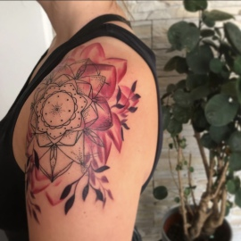
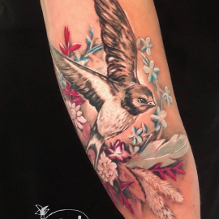
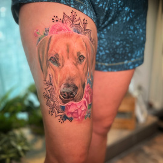
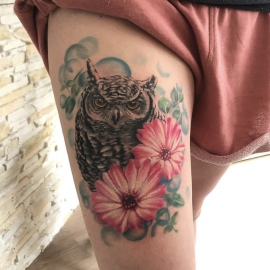
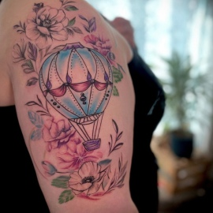
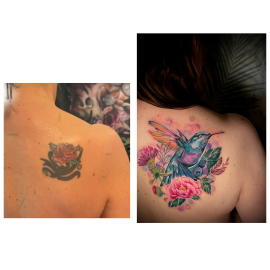
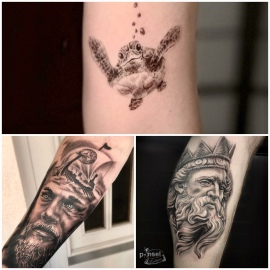

Jeder Mensch ist einzigartig – sein Tattoo auch.
Hier findest du einen Überblick über meine Arbeiten und Spezialisierungen.











Hier entstehen Motive mit Charakter – bunte florale Designs, surreale Ideen, präzise Handwerkskunst. Cover-Ups verwandeln Altes in etwas völlig Neues. Auch im Black & Grey steht Individualität im Mittelpunkt.
Das Herzstück meiner Arbeit. Fotorealistische Darstellungen mit atemberaubender Detailgenauigkeit – vom zarten Blick eines Hundes bis zum majestätischen Adler im Flug. Dein Tier – dein Begleiter, dein bestes Freund – für immer auf deiner Haut.
Hauchzarte Linienarbeiten, die wie mit einem Federkiel gezeichnet wirken. Botanik, Blüten, Ranken – filigran und zeitlos elegant. Als eigenständiges Motiv oder als dekorative Rahmung für ein realistisches Portrait. Feineline ist Geduld und Präzision.
Symmetrie trifft Eleganz. Ornamentale Muster, die sich perfekt an den Körper anpassen und eine starke visuelle Wirkung entfalten. Mandala-inspiriert, geometrisch, architektonisch – mit klarer Struktur und hohem Wiedererkennungswert.
Hier lebt das Unerwartete. Surreale Welten, unmögliche Kombinationen, Träume auf Haut. Mit satten Farben und hohem Kontrast entsteht etwas, das du nirgendwo sonst findest. Und natürlich: Dinosaurier. Immer.
EIN TATTOO IST DAS EINZIGE WAS DU DIR
IN DEINEM LEBEN GÖNNST
OHNE ES JE WIEDER ZU VERLIEREN...
Füll das Kontaktformular aus – oder schick mir eine E-Mail. Beschreib deine Idee, die gewünschte Körperstelle und lade gerne Referenzbilder hoch.
Wir besprechen deine Vorstellung, ich schätze Preis und Dauer ein – ganz unverbindlich. Erst wenn wir beide happy sind, geht es weiter.
Du buchst deinen Wunschtermin mit einer Anzahlung. Das Design wird final abgestimmt und du erhältst alle Infos zur Vorbereitung.
Komm ins Atelier, lehn dich zurück und lass Kunst entstehen. Dein Tattoo – handgefertigt, einzigartig, für immer ein Teil von dir.
Ich berate dich gerne – kostenlos und ohne Druck. Schick mir einfach deine Idee.